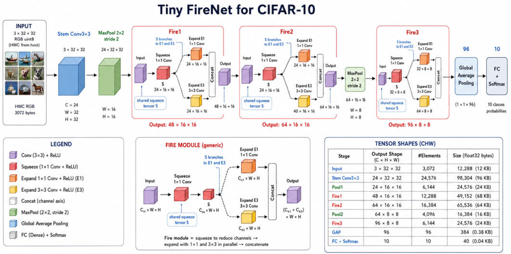

Tiny FireNet CIFAR-10 on RP2350 with `NoodleBuffer

1. Motivation
This experiment evaluates a small CNN classifier for CIFAR-10 on an RP2350-based board using NoodleBuffer abstraction in Noodle. The tested model is a Tiny FireNet-style CNN inspired by SqueezeNet-style fire modules. The input is a CIFAR-10 RGB image of size 32 × 32 × 3, and the output is a 10-class softmax prediction.
2. Model Design
The model follows a compact FireNet structure:
Input RGB 3 × 32 × 32
Stem Conv3×3 24 × 32 × 32
MaxPool 24 × 16 × 16
Fire1 squeeze1×1 12 × 16 × 16
Fire1 expand1×1 24 × 16 × 16
Fire1 expand3×3 24 × 16 × 16
Fire1 concat 48 × 16 × 16
Fire2 squeeze1×1 24 × 16 × 16
Fire2 expand1×1 32 × 16 × 16
Fire2 expand3×3 32 × 16 × 16
Fire2 concat 64 × 16 × 16
MaxPool 64 × 8 × 8
Fire3 squeeze1×1 32 × 8 × 8
Fire3 expand1×1 48 × 8 × 8
Fire3 expand3×3 48 × 8 × 8
Fire3 concat 96 × 8 × 8
Global Average Pool 96
Dense + Softmax 10
The model uses three Fire modules. Each Fire module contains:
input
└── squeeze 1×1 convolution
├── expand 1×1 convolution
└── expand 3×3 convolution
└── concatenate expand outputs
This structure is attractive for microcontrollers because the squeeze layer reduces the number of channels before the more expensive expand layers.
3. Input and Tensor Layout
The host sends CIFAR-10 images through serial as HWC RGB bytes:
[y][x][r,g,b]
For example, the payload size is:
32 × 32 × 3 = 3072 bytes
Inside the MCU, the image is converted into CHW float format:
[c][y][x]
Each byte is normalized to [0, 1]:
x[0 * IMG_PIXELS + chw0] = (float)src[hwc + 0] * (1.0f / 255.0f);
x[1 * IMG_PIXELS + chw0] = (float)src[hwc + 1] * (1.0f / 255.0f);
x[2 * IMG_PIXELS + chw0] = (float)src[hwc + 2] * (1.0f / 255.0f);
This is important because the serial protocol uses image-friendly HWC RGB order, while the current Noodle convolution implementation uses CHW tensor order.
4. How NoodleBuffer Is Useful
Earlier Noodle examples often used fixed-size arrays for intermediate tensors. That approach is simple, but it makes memory usage rigid. Every tensor buffer must be manually sized in advance, and overestimating buffer sizes wastes SRAM.
The new NoodleBuffer design changes this behavior. Instead of declaring all tensor arrays manually, the program declares reusable tensor buffers:
static NoodleBuffer X;
static NoodleBuffer A;
static NoodleBuffer B;
static NoodleBuffer S;
static NoodleBuffer E1;
static NoodleBuffer E3;
A buffer grows when a larger tensor is required:
float *x = noodle_buffer_require(dst, required_elements);
Once grown, the buffer keeps its capacity and is reused by later layers. This creates a predictable grow-only memory pattern:
small tensor -> buffer grows
larger tensor -> buffer grows again
smaller tensor -> buffer reuses existing capacity
This is very useful for embedded inference because it makes peak tensor residency explicit.
5. Buffer Roles
The FireNet implementation uses six NoodleBuffer objects:
| Buffer | Role |
|---|---|
X |
Input tensor |
A |
Main ping-pong tensor buffer |
B |
Main ping-pong tensor buffer |
S |
Fire-module squeeze output |
E1 |
Fire-module expand 1×1 output |
E3 |
Fire-module expand 3×3 output |
The scratch buffers S, E1, and E3 are needed because the Fire module must keep multiple tensors alive at the same time:
S must remain alive while both expand branches are computed.
E1 and E3 must remain alive until concat finishes.
This is different from a simple sequential CNN, where two ping-pong buffers are often enough.
6. Correct Tensor Flow
The correct tensor flow is:
X -> A Stem convolution
A -> B Pool1
B -> A Fire1
A -> B Fire2
B -> A Pool2
A -> B Fire3
B GAP
B -> A Dense + Softmax
7. Measured Memory Usage
After the buffers reached their maximum sizes, the measured NoodleBuffer capacities were:
| Buffer | Size in bytes | Corresponding tensor |
|---|---|---|
X |
12,288 | 3 × 32 × 32 × 4 |
A |
98,304 | 24 × 32 × 32 × 4 |
B |
65,536 | 64 × 16 × 16 × 4 |
S |
24,576 | 24 × 16 × 16 × 4 |
E1 |
32,768 | 32 × 16 × 16 × 4 |
E3 |
32,768 | 32 × 16 × 16 × 4 |
| Total | 266,240 | ≈260 KB |
The measured remaining free RAM after buffer growth was approximately:
159,431 bytes ≈ 155 KB
Therefore, the current RP2350 FireNet implementation requires approximately:
Tensor buffer memory: 266,240 bytes ≈ 260 KB
Remaining RAM: 159,431 bytes ≈ 155 KB
8. Inference Result
After fixing the Pool2 tensor-flow bug, a 10-image CIFAR-10 smoke test produced:
Accuracy: 8/10 = 80.00%
Mean inference: 2.085803 s
Example output:
PRED 3 2.086086 0.665115 cat OK
PRED 8 2.085790 0.842198 ship OK
PRED 8 2.085797 0.935005 ship OK
PRED 0 2.085736 0.814907 airplane OK
PRED 6 2.085793 0.929317 frog OK
PRED 6 2.085766 0.965863 frog OK
PRED 1 2.085783 0.557270 automobile OK
PRED 2 2.085754 0.589441 bird NO
PRED 3 2.085751 0.784107 cat OK
PRED 9 2.085771 0.574728 truck NO
The two incorrect predictions were plausible CIFAR-10 confusions:
frog -> bird
automobile -> truck
9. Discussion
The experiment shows that NoodleBuffer makes memory behavior easier to observe and explain. Instead of manually reasoning about all intermediate arrays, we can inspect the actual capacity reached by each logical buffer.
The final memory profile also explains the hardware boundary:
RP2350: feasible fully in SRAM
Smaller MCUs: likely require tensor externalization
For example, a total tensor-buffer requirement of about 260 KB is acceptable on RP2350, but it is far beyond AVR-class boards and too large for many STM32F103-class boards if kept fully in SRAM.
This supports the broader Noodle idea: the same operator abstraction can be extended from RAM-backed tensors to file-backed or external-memory-backed tensors. NoodleBuffer is therefore a useful stepping stone toward selective tensor residency.
10. Conclusion
The RP2350 Tiny FireNet CIFAR-10 experiment demonstrates that the new grow-only NoodleBuffer abstraction works well for SRAM-backed CNN inference.
The main conclusions are:
NoodleBuffermakes intermediate tensor memory measurable and predictable.- Each buffer grows only to the largest tensor it needs to hold.
- The Tiny FireNet CIFAR-10 model requires about 266,240 bytes, or 260 KB, of tensor-buffer memory.
- The RP2350 still has about 155 KB free after the buffers reach their peak capacity.
- A tensor routing error in Pool2 initially caused poor accuracy, but after correcting the flow from
B -> A, the model produced sensible predictions. - The corrected model achieved 8/10 accuracy in a small smoke test, with mean inference time of about 2.086 s per image.
Overall, this experiment confirms that NoodleBuffer is a practical abstraction for managing tensor residency in Noodle. It also gives a clear baseline for deciding when future models can remain fully SRAM-backed and when selective externalization to SD card, flash, or other storage becomes necessary.